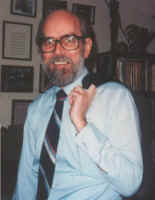

|
 He has represented the U. S. State Department on reading and lecturing tours throughout Latin America, Europe, and the Middle and Far East. His stories, translations, poems, and critical essays have appeared in most of the seminal journals in English and his poems have been translated into several languages. Past-president of the American Literary Translators Association, founding editor of the New Orleans Review, founding director of the University of Arkansas Press, and Latin American editor for the third edition of Benetís Readerís Encyclopedia, he is presently University Professor of English and Foreign Languages at the University of Arkansas. His work has been recognized by the Henry Bellaman Poetry Prize, the Amy Lowell Award in Poetry from Harvard University, the New York Arts Fund Award for Significant Contribution to American Letters, the Prix de Rome for Literature and the Academy Award for Literature, both from the American Academy of Arts and Letters, honorary doctorates from Lander College and Hendrix College, the Poetsí Prize, the Charity Randall Citation for Contribution to Poetry as a Spoken Art from the International Poetry Forum, and the John William Corrington Award for Literary Excellence. In 1994 he was named Socio Benemerito dellíAssociazione, Centro Romanesco Trilussa, Roma. He was inaugural poet for the second inauguration of William Jefferson Clinton. In 1999 the multinational editorial board of Voices International named him one of the best twenty poets in the world now writing in English, and he was selected by a board of teachers, librarians, and writers as one of the 500 most important poets of all languages in the 20th century, for inclusion by Roth Publishing Company on the cd Poetry of Our Time. His thirty books include a history of American railroads (with James Alan McPherson), translations from the work of Nicanor Parra and Giuseppe Gioachino Belli, critical works on John Crowe Ransom and John Ciardi, a standard reference on prosodics from LSU Press entitled Patterns of Poetry: An Encyclopedia of Forms , and several collections of his own poetry, the most recent of which are Points of Departure , The Ways We Touch , and Some Jazz A While: Collected Poems (all from the University of Illinois Press). Poems of Miller Williams is available on cassette from Spoken Arts, and the University of Missouri Press has published a collection of essays by thirteen scholars and poets, edited by Michael Burns, under the title Miller Williams and the Poetry of the Particular. "Cantalopes" is featured in The Lives of Kelvin Fletcher: Stories Mostly Short.
|
{kind=link}